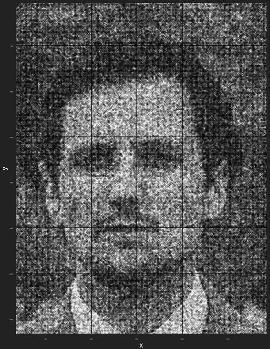

I am a statistician and data scientist working for Takealot Group South Africa.

CV: Joseph Bolton CV
Current skills
Advanced R programming
- tidyverse
- r-markdown (some LaTeX)
Python
H2o Machine-Learning Framework (within R)
SQL
- Vertica, PostgreSQL
- writing data to SQL, table manipulation, window functions
Excel
Recommender Engines
- Content-based Filtering
- Collaborative Filtering
- Latent Factor Matrix Factorisation
- TF-IDF
- Implementations in R and python
Optimisation
- Linear Optimisation
- Linear programming
- Integer Programming
- Meta-Heuristic Optimisation Algorithms
- Genetic/Evolutionary Optimisation
- Multiple-objective optimisation
Uplift Modelling (estimation of heterogeneous treatment effects)
- Binary response (e.g. response to treatment yes/no) [conversion uplift]
- Continuous response (e.g. revenue)
Time Series modelling
- ARIMA
- Exponential Smoothing (state space models)
- Time Series Decomposition (trend, seasonality, error)
- Time-Series Regression
Regression Modelling
Classification Modelling
- GLM (logistic, multinomial), splines, ridge/lasso/elastic net, KNN, classification tree, bagging & random forest, GBM, LDA & QDA, feed-forward neural network
Clustering
- Hierarchical
- k-means
- PAMS (k-medoids) & CLARA (blog post)
- Silhouette values
- Gower distance for mixed data types
Association Rules (basket analysis)
Advanced Data visualisation
Regular Expressions (REGEX)
Dimension Reduction
- Principal Components Analysis (PCA)
- Multi-Dimensional Scaling (MDS)
- Locally Linear Embedding (LLE)
- Factor Analysis
Process Workflow and Automation of Modelling Projects
- Data ingestion {csv, excel, SQL} -> {R, python}
- Data quality testing
- Data cleaning
- Feature Engineering
- (Feature Selection)
- Model Fitting
- Model Comparison
- Model Validation
- Reporting
- Process Monitoring
Current development areas
Areas of potential future interest
CSS, HTML, JavaScript
Reinforcement learning
Hadoop
Apache Spark
Excel VBA
Non-linear dimension reduction algorithms
Stochastic Processes
Regression & Classification Models
- XGBoost
- SVM
- LOESS
- Generalised Additional Models
- Naive Bayes
- Partial Least Squares
- Quantile Regression
- Regression with time-series data
Bayesian hypothesis testing
Multivariate Analysis
- Multiple Correspondence Analysis
- Factor Analysis
- Biplots
Advanced time-series modelling
- Dynamic Time Warping (DTW)
- ARCH & GARCH models
- TBATS
- Hybrid models (combining predictions of multiple models)
- Linear regression with autocorrelated errors
- Vector autoregression (VAR models)
- Prophet
- Cross-Validation for Time-Series Models
- Neural-Network-based methods
Optimisation
- TABU search
- Simulated Annealing
Non-Statistical Interests